Code
df <- scale(mtcars)SATVI Computational Group
April 9, 2025
Heatmaps are 2-dimensional data visualization tools that show the magnitude of a certain variable as color. The variation in color may be by hue or intensity, giving a visual cue to the reader about how the data is distributed or clustered. Heatmaps are particularly useful for visualizing complex data sets, such as those involving large matrices or data with multiple variables.
R is helpful for analyses involving heatmaps as it offers multiple packages designed to design heat maps that can be tailored to suit complex datasets. Here are some of the common options for heat map packages:
There is also a heatmap function contained within the Seurat package (DoHeatmap) that is designed for single cell experiments processed via Seurat. We will not cover the Seurat-based heatmap method in this session as we are more focused on generalizable / generic methods of generating heatmaps for more basic analyses. If you are doing single cell work and would like to use the Seurat option, you can read the documentation here.
For the purposes of this tutorial, we will use the built-in R dataset “mtcars.” We will standardize the data to make variable comparable using the ‘scale()’ function.
The built in R base function for generating heatmaps is simply called ‘heatmap()’. All you need is a dataframe and to specify if you would like to scale and center the values by row or column. Dendrograms will also appear by default.
Note - the scale option will default to “row” unless specified.
You can also specify the color palette as you please. You can either list specific colors:
Note - the “256” specifies how many colors to generate in the color palette.
Note - Color selection for heatmaps is key! Please be sure to consider those who are visually impaired.
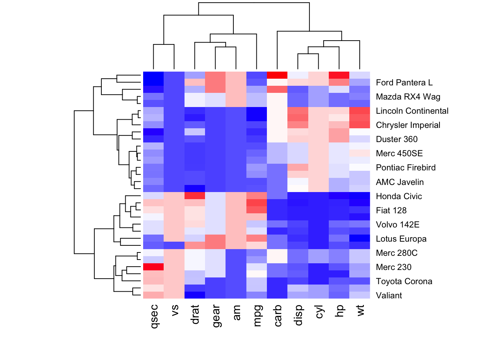
Or you can use pre-set color palettes, such as those provided by ColorBrewer where the “10” specifies the number of colors to select from the ColorBrewer palette.
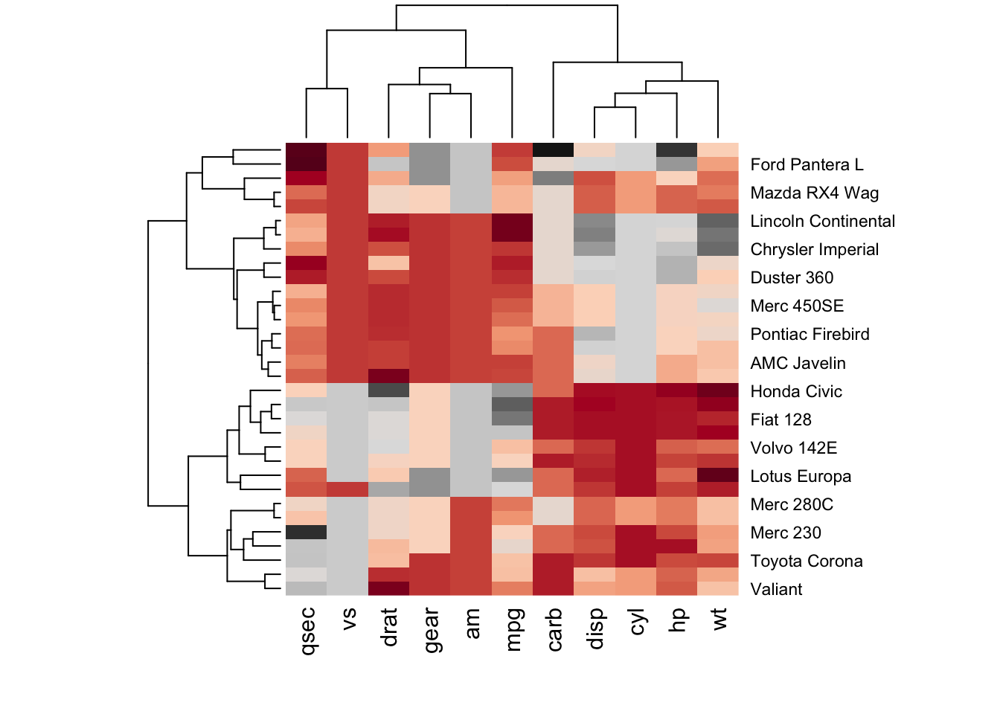
While the R base package is capable, other packages may offer more flexibility to better design your heatmap.
The gplots package offers an extension of the base R heatmap package called ‘heatmap.2()’.
One of the immediately noticable default feature differences are the trace, color key, and density info. Let’s recreate the same plot as above, but using the heatmap.2() package.
The trace option adds trace lines that indicate the values of datapoints. This can offer a clearer view of the distribution and patterns within the data. Heatmaps are summary visualizations, so at times, including trace can be helpful, however, if they add no additional value, they can be removed.
The color key also defaults to include a histogram of density information. This also provides insights into the distribution of the dataset, but can be removed if desired.
It may also be helpful to split the heatmap based on clustering. To do so, we can use the pheatmap package, which is short for “pretty heatmap”.
Here, you can split the overall heatmap to create space between the different clusters represented by the dendrogram.
Note - the number of splits can be specified
Now, increase the number of row splits.
Now, split by column rather than by row.
There are many options for improving the visualization of your heatmaps. We encourage you to always consult package documentation when writing your own code, but for demonstration purposes, we will use a few options for pheatmap.
One key option to consider is clustering distance. Clustering distance, in the context of heatmaps, is a metric that measures the similarity / dissimilarity between rows or columns when performing hierarchical clustering. Which metric you choose will determine how the data points group together in the dendrograms displayed alongside the heatmaps.
The most common clustering distance for immunological work is Euclidean distance, which measures the straight-line distance between two points in Euclidean space. This is the default for pheatmap.
Let’s see what happens when we change the clustering method.
Other options to consider that impact clustering are clustering_method and clustering_callback. We encourage you to experiment with these when making your own heatmaps.
Returning to Euclidean distance, let’s modify some cosmetic components of the heatmap.
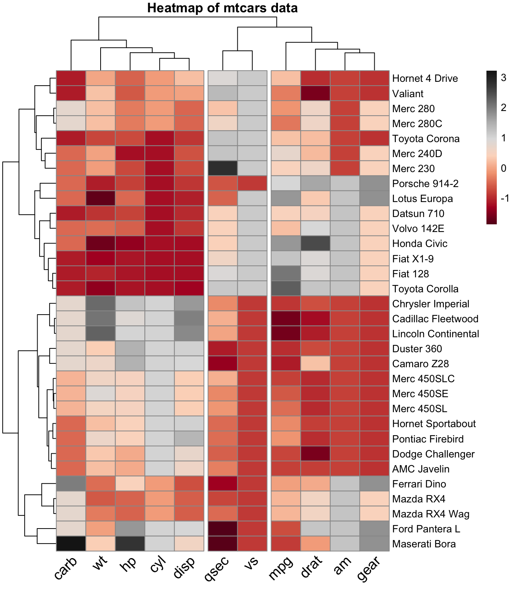
If you want to maintain clustering, but have no need to show the dendrograms, you can set the tree height to 0 for rows, columns, or both.
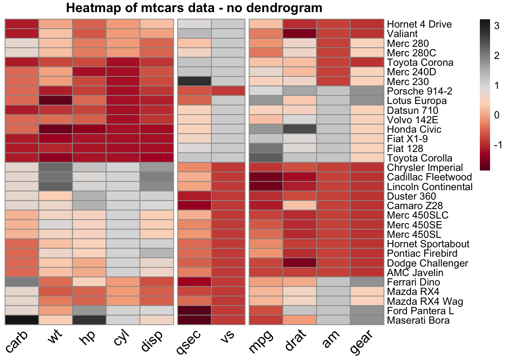
If you have no need for dendrograms OR clustering at all you can set clustering to false. This is not common.
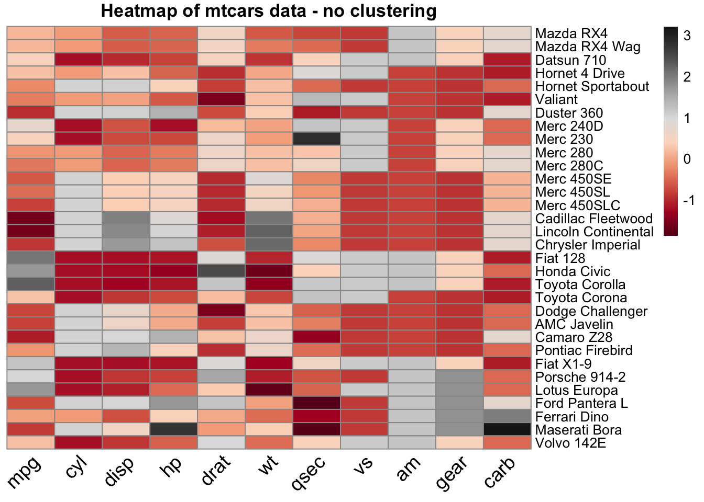
In some cases, additional complex annotations may enhance the interpreation of heatmap data representation. In this case, consider using the ComplexHeatmap package.
ComplexHeatmap is an expanded heatmap package available through Bioconductor. It offers more flexibility for arrangement and annotation of single or multiple heatmaps even when data comes from different sources.
ComplexHeatmap is an extensive package and we suggest reviewing the documentation
Note - color palettes for ComplexHeatmap should be generated using the ‘circlize()’ package.
Start with a simple, single, heatmap.
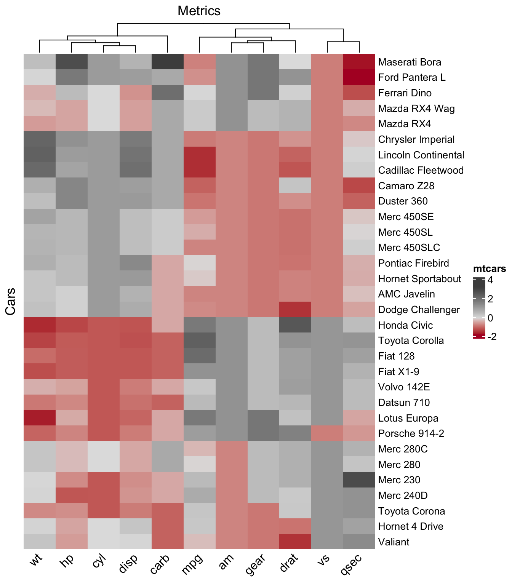
Using ‘dendextend()’ you can also customize the appearance of your dendrogram.
library(dendextend)
col_dend = hclust(dist(t(df)))
Heatmap(df,
name = "mtcars", # title of legend
column_title = "Metrics",
row_title = "Cars",
row_names_gp = gpar(fontsize = 10),
column_names_gp = gpar(fontsize = 12),
column_names_rot = 45,
col = col_1,
show_row_dend = FALSE,
clustering_distance_columns = "euclidean",
cluster_columns = color_branches(col_dend, k = 2))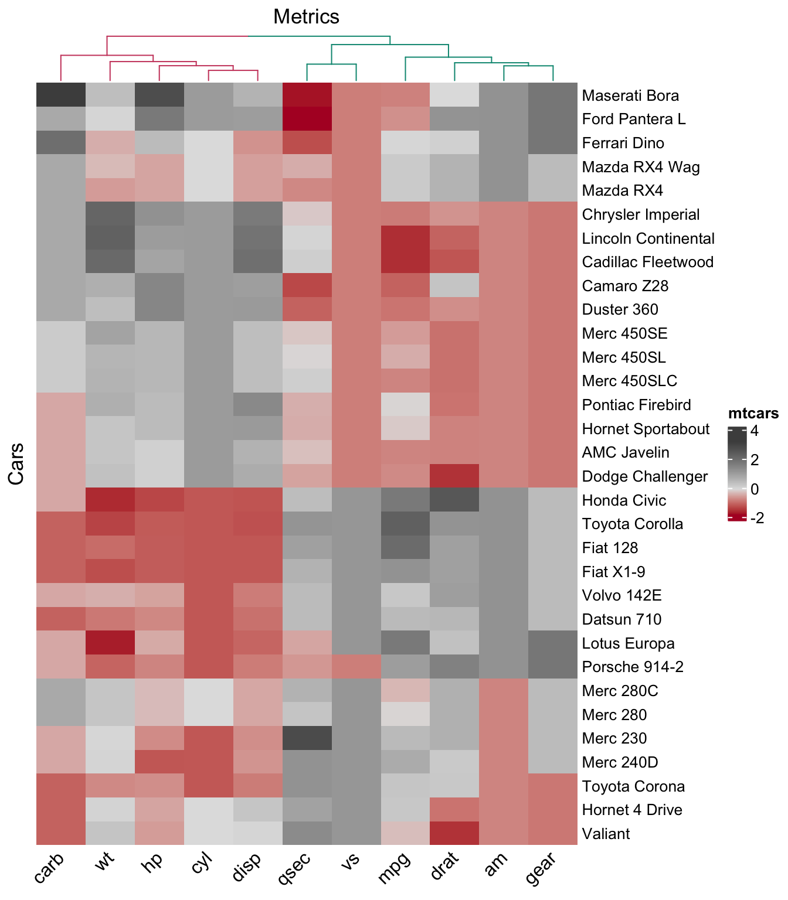
Or, you may rather want to split your heatmap, similarly to how we did so above. With ComplexHeatmap, you can also generate splits based on variable groupings.
Note - if you want the k-means clustering to be reproducible, set.seed must be used to set the same random seed
The k-value typically refers to the number of clusters you want to create in a clustering algorithm. In the context of heatmaps, clustering is often used to group similar rows or columns together to make patterns more apparent.
k-means Clustering: In k-means clustering, the k-value specifies the number of clusters to partition the data into. The algorithm will try to minimize the variance within each cluster.
Hierarchical Clustering: In hierarchical clustering, the k-value can be used to cut the dendrogram at a specific level to create k clusters.
The set.seed function is used to set the seed for R’s random number generator. This ensures that the results of any random processes (like the initialization of cluster centroids in k-means clustering) are reproducible.
Reproducibility: By setting a seed, you ensure that every time you run your code, you get the same results. This is crucial for reproducibility in scientific research and debugging.
Consistency: It helps in getting consistent results across different runs, which is important for comparing results and ensuring that any observed patterns are not due to random chance.
set.seed(123)
Heatmap(df,
name = "mtcars", # title of legend
column_title = "Metrics",
row_title = "Cars",
row_names_gp = gpar(fontsize = 10),
column_names_gp = gpar(fontsize = 12),
column_names_rot = 45,
col = col_1,
show_row_dend = FALSE,
clustering_distance_columns = "euclidean",
column_km = 3,
split = mtcars$cyl)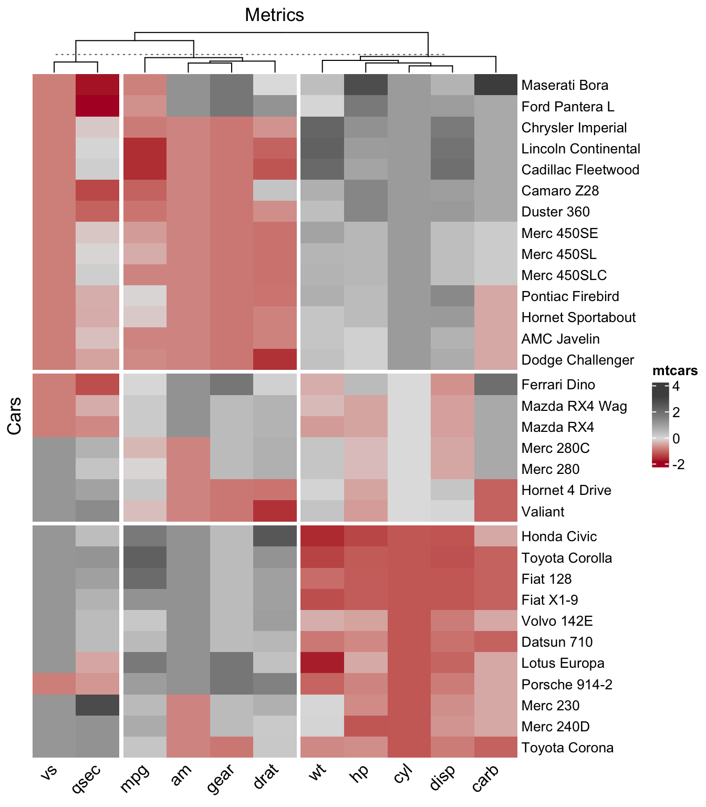
In many cases, it will also be necessary to annotate your heatmaps or provide additional visualizations for the rows and columns.
col = list(cyl = c("4" = "cyan", "6" = "gray", "8" = "yellow"),
am = c("0" = "lightblue", "1" = "purple"))
# Create the heatmap annotation
ha <- rowAnnotation(
cyl = mtcars$cyl, am = mtcars$am, mpg = anno_barplot(mtcars$mpg, gp = gpar(fill = "gray")),
col = col
)
Heatmap(df,
name = "mtcars", # title of legend
column_title = "Metrics",
row_title = "Cars",
row_names_gp = gpar(fontsize = 10),
column_names_gp = gpar(fontsize = 12),
column_names_rot = 45,
col = col_1,
show_row_dend = FALSE,
clustering_distance_columns = "euclidean",
column_km = 3,
split = mtcars$cyl,
right_annotation = ha)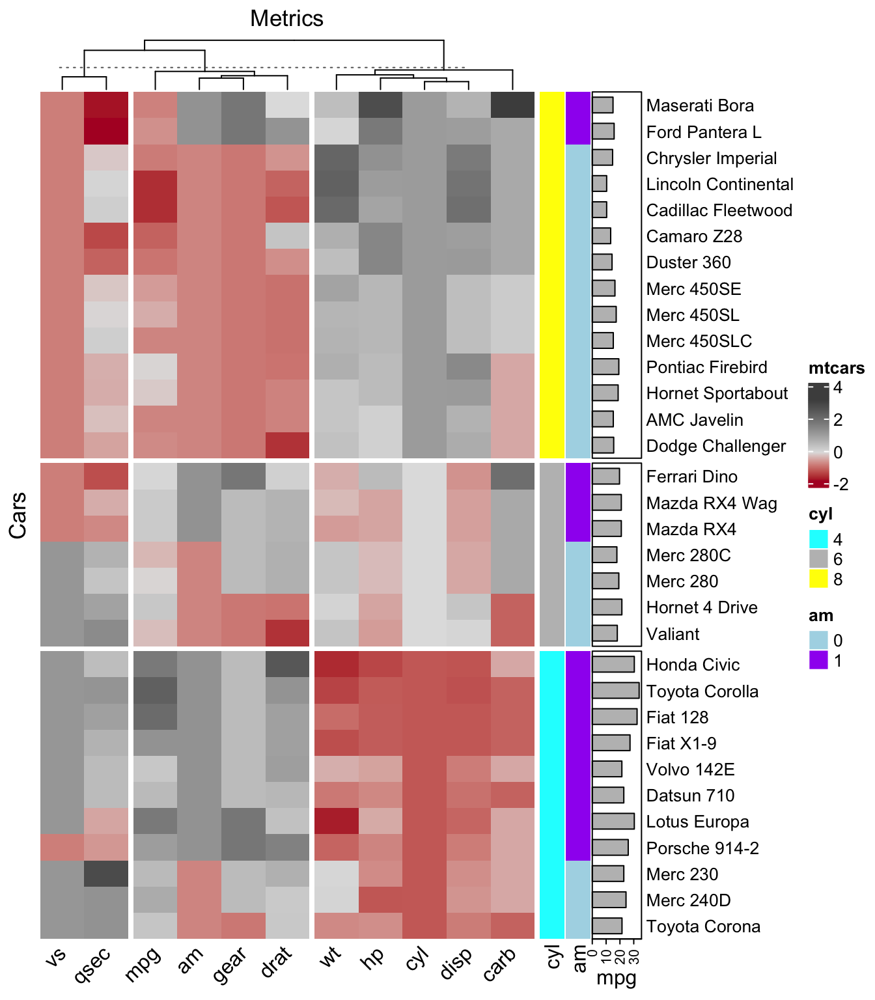
Arrange multiple heatmaps.
ht1 <- Heatmap(df,
name = "mtcars", # title of legend
column_title = "Metrics",
row_title = "Cars",
row_names_gp = gpar(fontsize = 10),
column_names_gp = gpar(fontsize = 12),
column_names_rot = 45,
col = col_1,
show_row_dend = FALSE,
clustering_distance_columns = "euclidean",
column_km = 3,
split = mtcars$cyl,
right_annotation = ha)
ht2 <- Heatmap(df,
name = "mtcars", # title of legend
column_title = "Metrics",
row_title = "Cars",
row_names_gp = gpar(fontsize = 10),
column_names_gp = gpar(fontsize = 12),
column_names_rot = 45,
col = col_2,
show_row_dend = FALSE,
clustering_distance_columns = "binary",
column_km = 3,
split = mtcars$cyl,
right_annotation = ha)
ht1 %v% ht2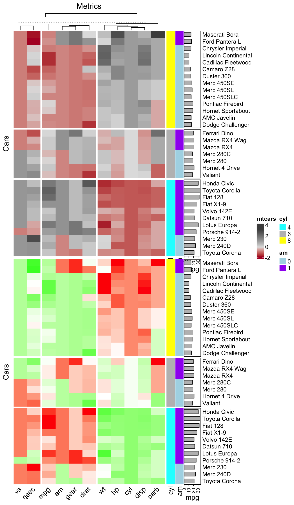
The creators of CompelxHeatmap have also developed a ShinyApp which allows you to input your heatmaps and explore them in an interactive ShinyApp.
For documentation on the ShinyApp, view the InteractiveComplexHeatmap documentation.
The packages discussed above are excellent for generating heatmaps, but they are very focused. A benefit to this is that many of the key features (i.e. dendrograms) are already built in to the functions and using these packages may save you time and energy when generating basic heatmaps.
However, you may come across the need to perform an analysis that does not require these features and a more generalizable tool may be better suited. In this case, you may consider using ggplot2. As we know, ggplot2 is a very generalizable, versatile, and flexible data visualization package. It can also be used for heatmaps! A few considerations:
Because ggplot2 is not a dedicated heatmap package, if you choose to use it, you may need to code some features separately. For example, dendrograms are not automatically generated when using ggplot2 because ggplot2 relied on the geom_tile() option, which is more generic and will allow for a heatmap-like colorization, but will not automatically perform clustering, and therefore, will not produce a dendrogram.
Because clustering is not performed automatically using ggplot2, you should carefully consider the scenarios that might be most suitable for using this package to create a heatmap.
One scenario might be for looking at correlations:
In the below example, we would like to determine the correlation between all of the column variables in the mtcars dataset. We then use ggplot2 to create a heatmap based on correlation values and print the correlation values in each tile.
# Load necessary libraries
library(ggplot2)
library(reshape2)
library(RColorBrewer)
# Get the mtcars dataset
data(mtcars)
# Compute the correlation matrix
cor_matrix <- cor(mtcars)
# Melt the correlation matrix for ggplot
melted_cor_matrix <- melt(cor_matrix)
# Create the heatmap with correlation values
ggplot(data = melted_cor_matrix, aes(Var1, Var2, fill = value)) +
geom_tile() +
scale_fill_gradientn(colors = brewer.pal(9, "RdYlBu"), limits = c(-1, 1)) +
geom_text(aes(label = sprintf("%.2f", value)), color = "black", size = 3) + # Smaller correlation values text
labs(title = "Correlation Heatmap of mtcars Dataset", x = "Variables", y = "Variables", fill = "Correlation") +
theme_minimal() +
theme(axis.text.x = element_text(angle = 45, vjust = 1, hjust = 1))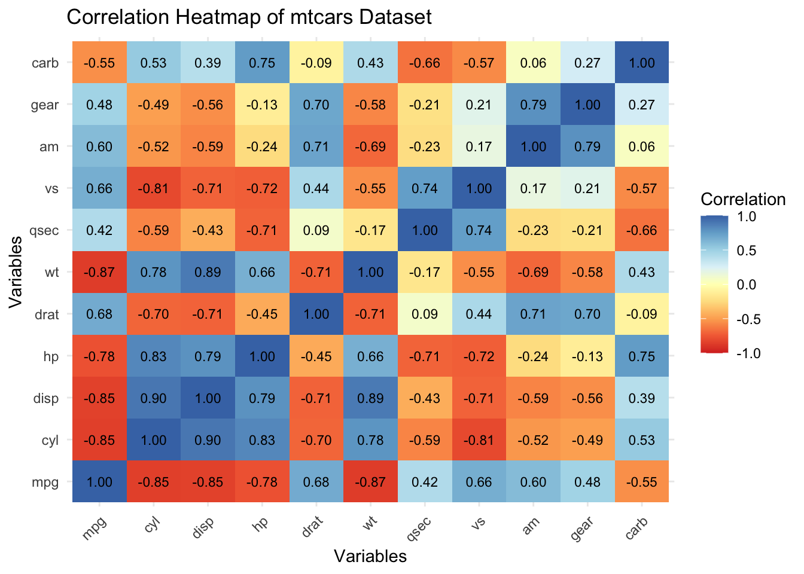
Make a heatmap with your own data using any of the tools described above. If you do not have your own data yet, generate a test dataset in R by assigning values to a custom matrix, or use one of the built in R datasets.
Investigate the different tools and generate a heatmap with a different format or additional features we did not cover here.
Export your dataframes used to make your heatmaps to .csv and .xlsx.
Export your heatmaps to .jpg and .pdf.
You may have noticed that in section 10.1.5 Generate heatmap using ComplexHeatmap, there is an error with the arrangement of the two heatmaps together. It is a layout error. Find the error and correct it.